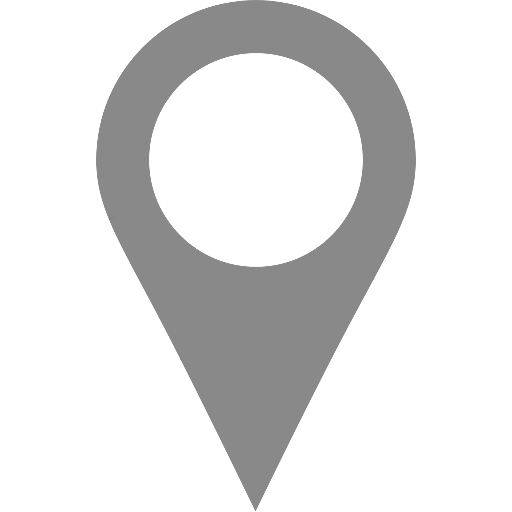
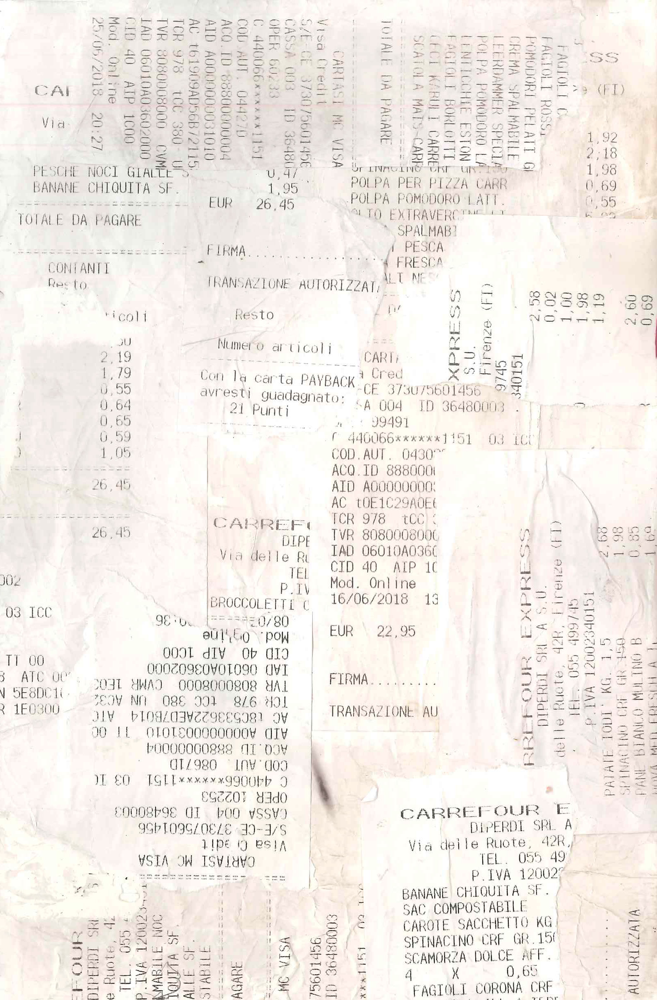
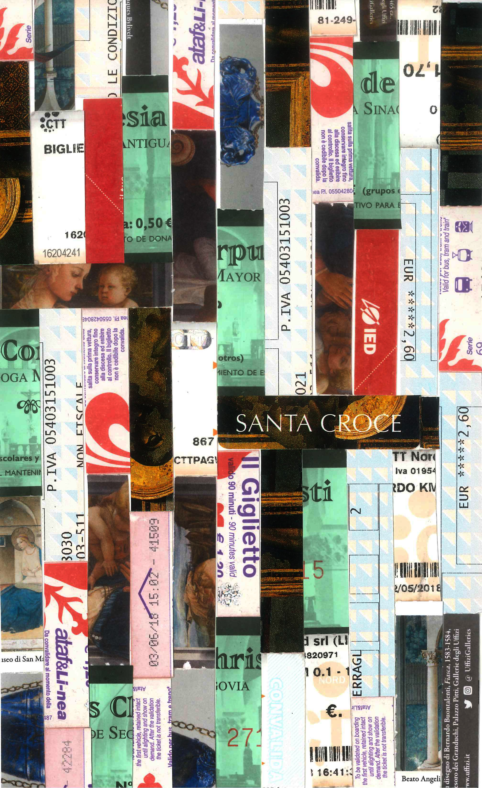
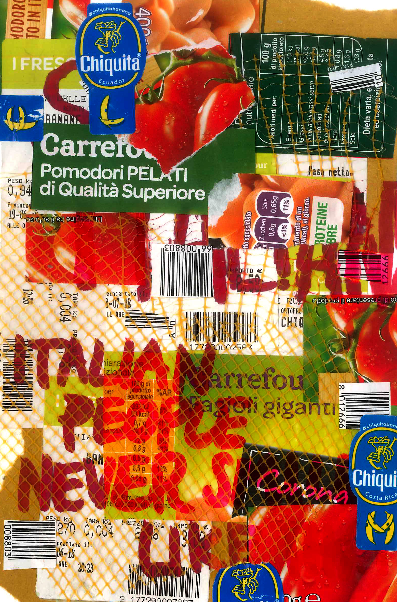
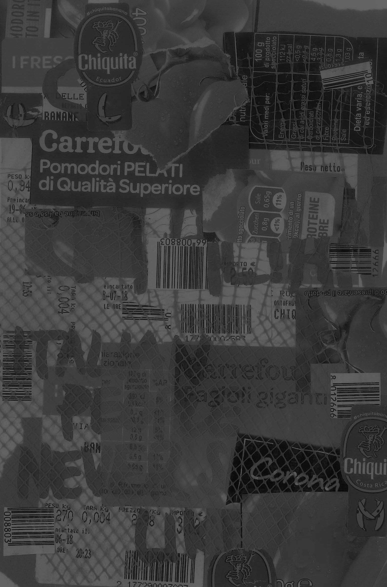
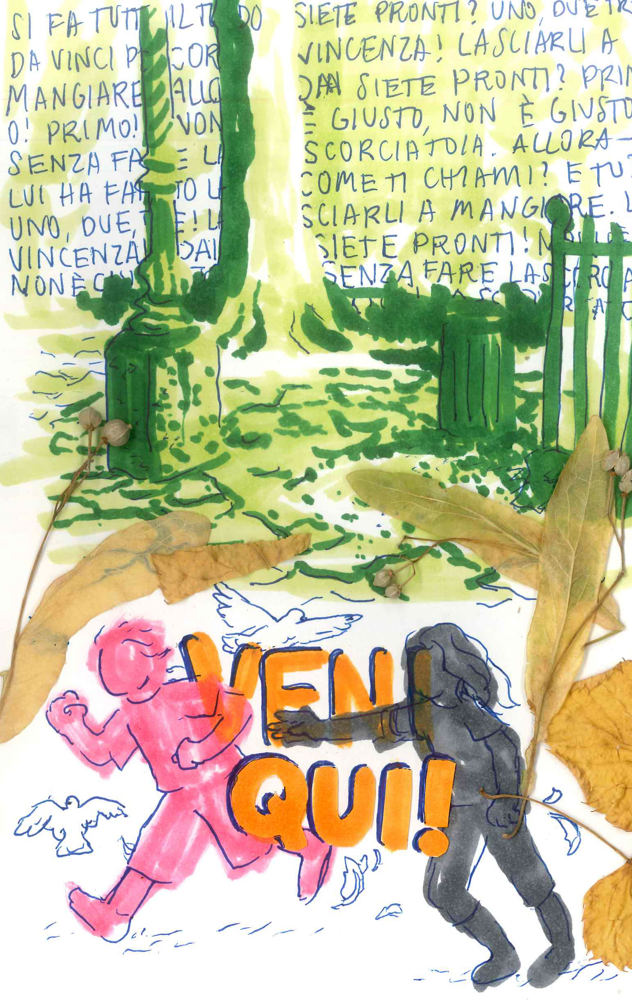
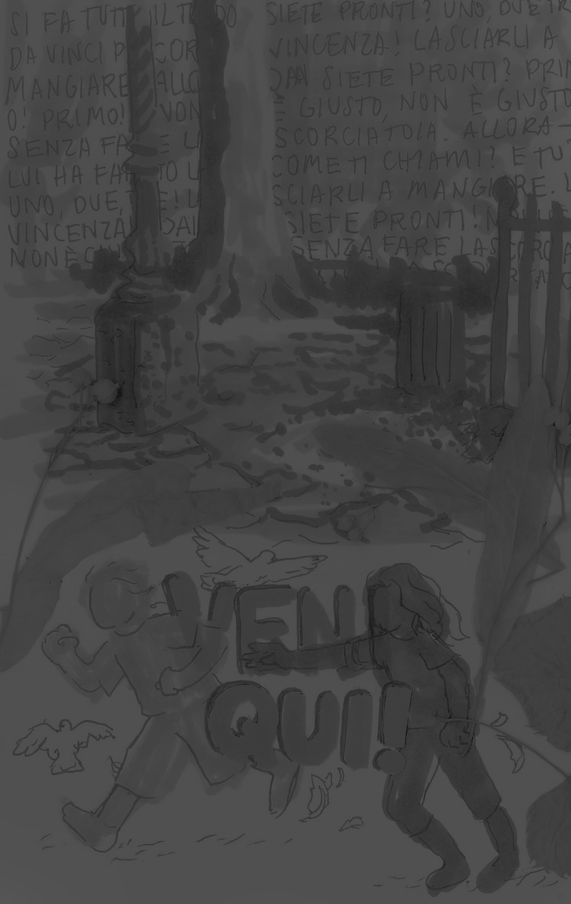
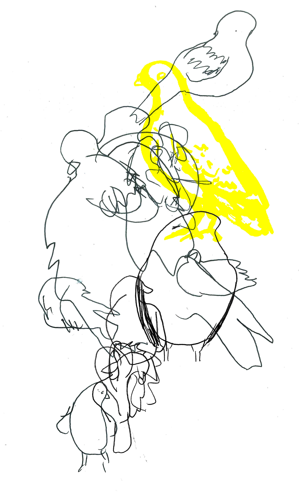
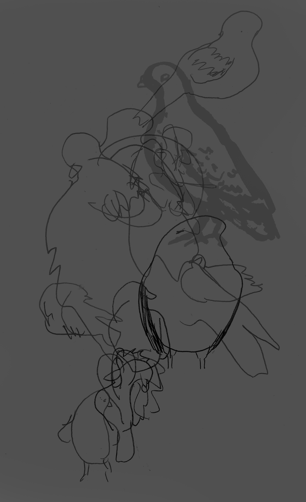

FLORENCE, ITALY

Ciao, buongiorno.
Borsa? Do you want a bag?
Carrefour 1
Location:
Via delle Ruote, 44 R, 50129
Firenze
Materials:
Journal entry
There’s something intoxicating about being free to cook for myself in my own kitchen for the first time, something great about becoming familiar with the grocery store down the street, recognizing the cashiers, experimenting and trying dishes until I fall on combinations I love and enjoy making… there’s something adult about that process that is extremely exciting to me as I transition from a child to a responsible person who can support herself. Taking this time to develop life skills like cooking is invaluable, and a prelude to the life I hope for in a city apartment in the future.

My interest in
and patience for
Italian art history
hits max capacity
about an hour and a half into the lecture
Art History
Location:
Materials:
Journal entry
I thought it would be a breeze to stay awake in art history when you’re actually there in the places seeing the work. Turns out I have never been more mistaken in my life. It’s just the same thing as back home but for three hours and standing up. Granted, some days are more interesting than others, but it’s that drowsy afternoon time slot that’s such a killer and somehow very popular for art history lecturing. At that two hour mark I always seem to lose my ability to care about the symbolism of the 400th life of Mary fresco of the day. At least I’m learning even more firmly that I am not meant to be an art history major. If this can’t engage me then absolutely nothing can.


Carrefour 2
"Sei Italiana?"
is by far the most classic opening line.
Although it's already obvious I'm not Italian,
or else you wouldn't be asking,
so the whole thing is kind of silly.
I'm still relatively receptive to it, though.
Location:
Via delle Ruote, 44 R, 50129
Firenze
Materials:
Journal entry
I don't think I'll ever forget the man who stopped me in the cookie aisle to ask me where I was from. “Sei Italiana?” When I responded that I wasn’t Italian, but American, he replied in strained English that he knew, he could tell, he knew from the second I passed him. “Italian people never smile like that,” he said. I became aware of how much I make eye contact with strangers and smile at them and how some people have seemed to be legitimately surprised by this. Is friendliness something to be proud of? Or am I just being strange here? I was uncertain if the man’s comment was praise or mild warning, like he was gently letting me know of a faux pas. I’ve continued to smile at people here, and they smile back. It’s already obvious I’m not from here, and I think friendliness is a small way to feel connected to strangers and society as a whole.


Lasciargli a mangiare.
Sieti pronti?
Uno, due, tre, via!
Non è giusto, non è giusto – senza fare la scorciatoia!
Allora – tu come ti chiami?
Piazza Torquato Tasso
Location:
Materials:
Journal entry
Life abides in these public parks in a way I’ve never seen in the suburbs. Having a space just to see other people and feel liveliness is so important for mental health. I can’t think of a single space like this where I live that’s outside and accessible to everyone, even people without cars. Where I come from, there’s no easy way to feel connected to nature or the lives of others around. That’s why I spend so much time in parks here in Europe while I can. These cities are built for human relationships instead of cars – and you can feel the difference immediately. I am so much more content here with access to public squares than I ever was in the suburbs spending my life bouncing from bubble to isolated bubble. If I could, I would sit in a lively park during a summer golden hour for the rest of my damn life.

"Viene auito?"
"L'ho fatto!!"

Pigeons
Location:
Materials:
Journal entry
So this afternoon I found myself in a park about a 40 minutes’ walk from my apartment. This place is so quiet and serene it almost instantly became one of my favorite nooks I’ve found in Florence. I sat near this guy with a dog because he looked like he knew what he was doing and would leave at the appropriate time before the park closed. Well... turns out I was WRONG because he got up at about 7:30 and told me as he passed by me that the park had closed a little while ago. So then I found myself locked in this park, standing at the gate while this guy is on the phone trying to get someone to come unlock it. I didn’t know what would happen to me if the police came and got us in trouble for trespassing, so I found a plastic bucket and stood on it to first hop a chain link fence and then a pretty large cement/brick wall. I scratched my legs up a bit in the process but I made it out all in one piece and it was totally worth it. Then on my way back home from this incident I stopped to draw some pigeons.